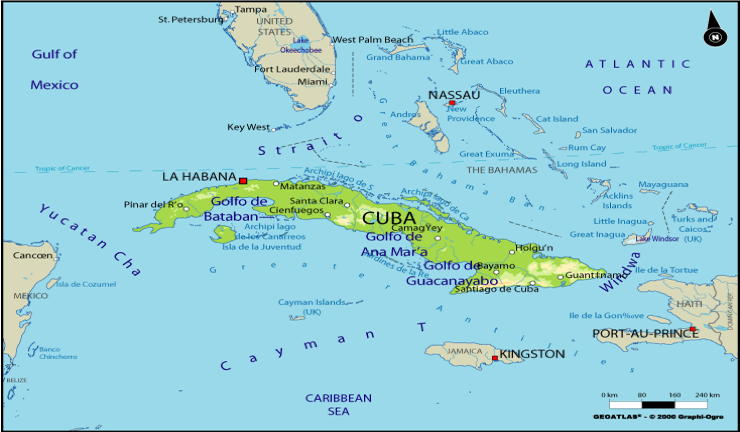
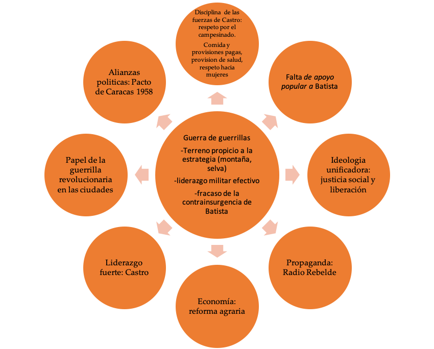

IB Docs (2) Team
IB Docs (2) Team

Estudio de caso: La revolución cubana
Los ENFOQUES DE APRENDIZAJE de esta página están diseñados para ayudar a los estudiantes a entender las causas, prácticas y efectos de la revolución cubana. Puede utilizarse como estudio de caso como guerra civil y guerra de guerrillas.
Preguntas orientadoras
Causas:
¿Qué importancia tuvieron los factores a largo plazo como causa de la revolución cubana?
¿Qué tan importantes fueron los factores de corto plazo en causar la revolución cubana?
¿Qué tan importantes fueron los factores económicos, ideológicos y territoriales como causas de la revolución cubana?
Prácticas:
¿Cómo libraron la guerra Castro y sus tropas?
¿Hasta qué punto las tácticas de guerrilla determinaron el resultado de la guerra?
Efectos
¿Cuál fue el impacto de la guerra en Cuba?
¿Qué importancia tuvieron los factores económicos, ideológicos y territoriales como causas de la Revolución Cubana?
Actividad inicial
¿Qué puede aprender de este video sobre Castro y la Revolución Cubana?
¿Qué importancia tuvieron los factores a largo plazo como causa de la revolución cubana?

Como se puede ver en el mapa de arriba, Cuba se encuentra a sólo 145 kilómetros (90 millas) de la costa de Florida y fue por esta razón que los EE.UU. consideraron a la isla de Cuba dentro de su esfera de influencia. Se determinó que cualquier gobierno en Cuba debía reflejar y proteger los intereses de EE.UU., los cuales eran considerables. En el área económica, las empresas estadounidenses controlaban la mayoría de las industrias financiera, ferroviaria, eléctrica, telegráfica y azucarera. La Enmienda Platt de 1901había dado a EE.UU. el derecho de establecer una base naval en la Bahía de Guantánamo y estipulaba que EE.UU. "ejercería el derecho de intervenir para la preservación de la independencia cubana" y para "el mantenimiento de un gobierno adecuado para la protección de la vida, la propiedad y la libertad individual".
Cuando Batista tomó el poder en 1952, suspendiendo la constitución, fue apoyado por los EE.UU. y a cambio siguió permitiendo que los EE.UU. dominaran la economía.
Fidel Castro Ruz, nacido en 1926, era hijo de un rico agricultor español en el este de Cuba. Asistió a la Universidad de La Habana, donde estudió derecho, y se unió al Partido Ortodoxo, cuyos objetivos eran acabar con la corrupción gubernamental y nacionalizar las empresas de propiedad estadounidense. Rápidamente ganó popularidad debido a sus habilidades de oratoria y planeó postularse para un escaño en el Congreso en 1952; sin embargo, estas elecciones nunca se celebraron debido al golpe de Batista. Desde el principio, Castro criticó el gobierno de Batista, y su primer intento directo de deponerlo se produjo en 1953.
Actividad inicial
Mira el videoCAMINOS DE REVOUCION , "ANTES DEL 59 aqui.
Discute con un compañero los factores que llevaron a Castro a liderar una guerra de guerrillas contra el régimen de Batista en Cuba y la naturaleza de la revolución de Castro.
Tarea Uno:
ENFOQUES DE APRENDIZAJE: Habilidades de pensamiento
Lee las fuentes a continuación. ¿En qué evidencia se basan estas fuentes en relación a los siguientes temas?
- La naturaleza del gobierno de Batista y el estado de Cuba antes de 1959
- El atractivo de Castro y sus ideas
Fuente A
De un libro sobre la historia de Cuba escrito por el Partido Comunista Cubano en 1977
Las inversiones estadounidenses en Cuba, que ascendieron a 50 millones de dólares en 1896, pasaron a 160 millones en 1906, a 205 millones en 1911 y a 1.200 millones en 1923, lo que incluía la propiedad de tres cuartas partes de la industria azucarera. Los gobiernos corruptos y las repetidas intervenciones yanquis en las primeras décadas de la república neocolonial hicieron su trabajo de entregar las riquezas del país a los amos extranjeros.
Fuente B
De un informe escrito por Arthur Schlesinger para el gobierno de EE.UU. sobre el estado de la Cuba de Batista
La corrupción del gobierno, la brutalidad de la policía, la indiferencia del régimen ante las necesidades del pueblo en materia de educación, atención médica, justicia social y económica... es una invitación abierta a la revolución.
Fuente C
De un libro de texto moderno
El gobierno de Batista favoreció a las élites y descuidó a la masa de la población. El analfabetismo seguía siendo alto y la vivienda era pobre, con una escasez de tierra disponible para pequeños propietarios. La naturaleza represiva y corrupta del régimen comenzó a alienar siempre al gobierno y al ejército de los Estados Unidos. Entanto, las clases medias no tenían voz en el gobierno.
Fuente D
Un extracto de la obra de Fidel Castro La Historia me absolverá, escrito entre 1953-56 mientras Castro estaba en prisión, en el que expone sus objetivos.
- Restauración de la Constitución de 1940 "hasta que el pueblo decida modificarla o cambiarla”
- La plena propiedad de los pequeños campos trabajados por los inquilinos y los ocupantes ilegales
- El derecho de los trabajadores y empleados "a compartir el 30% de los beneficios de todas las grandes empresas industriales, mercantiles y mineras, así como de los ingenios azucareros".
- El derecho de los trabajadores agrícolas de las plantaciones de azúcar "a compartir el 55% del valor de la caña de azúcar producida".
- Confiscación de 'todos los bienes y riquezas asegurados mediante fraude y corrupción protegidos políticamente durante los regímenes anteriores'.
Fuente E
Del discurso de Castro ante una corte cubana en julio de 1953
Con excepción de algunas industrias alimentarias, madereras y textiles, Cuba sigue siendo principalmente un productor de materias primas. Exportamos azúcar para importar dulces, exportamos pieles para importar zapatos, exportamos hierro para importar arados. Todo el mundo está de acuerdo en que es urgente industrializar la nación, que necesitamos industrias siderúrgicas, papeleras y químicas, que debemos mejorar la producción de ganado y granos, la técnica y el procesamiento en nuestra industria alimenticia para defendernos de la ruinosa competencia de los europeos en productos queseros, leche condensada, licores y aceites comestibles, y de los Estados Unidos en productos enlatados; que necesitamos barcos de carga, que el turismo debe ser una enorme fuente de ingresos. Pero los capitalistas insisten en que los trabajadores permanezcan bajo el yugo. El Estado se sienta con los brazos cruzados y la industrialización espera para siempre.
Fuente F
Un historiador que escribe sobre el estado de Cuba antes de la revolución
Todos los sectores de la sociedad dependían de la industria azucarera, ya fuera de su producción o de la importación y reventa de productos manufacturados estadounidenses que habían sido adquiridos con los beneficios de la venta de azúcar en los Estados Unidos. Esto también significaba inseguridad para los trabajadores. El sustento de las personas dependía del éxito de las cosechas; una mala cosecha significaba menos empleos y salarios más bajos.
Tarea dos
ENFOQUES DE APRENDIZAJE: Habilidades de pensamiento y comunicación
En pequeños grupos, lean el siguiente cuadro. Identifiquen las causas de largo plazo de los conflictos en Cuba hasta 1953. Elaboren una infografía propia que: a] incluya la información que aparece a continuación y b] establezca vínculos claros entre los factores económicos, la influencia extranjera, las tensiones sociales y los temas políticos en Cuba en ese momento.
 Factores que provocaron la revolucion cubana
Factores que provocaron la revolucion cubana
Fidel Castro, junto con su hermano Raúl y Abel Santamaría, dirigió un ataque a una guarnición militar, el cuartel de Moncada, el 26 de julio de 1953. El objetivo del asalto era incautar armas para usarlas en un levantamiento general contra Batista. Castro también creía que un ataque exitoso inspiraría el apoyo popular para el derrocamiento del régimen.
Sin embargo, el asalto fracasó ya que el ejército pudo defender los cuarteles. Alrededor de 70 de los 140 rebeldes fueron asesinados, incluyendo a Santamaria. Los rebeldes que escaparon fueron perseguidos por las fuerzas de Batista y Castro y su hermano fueron arrestados.
Batista quería usar el "juicio" de los líderes rebeldes sobrevivientes como una muestra de la fuerza del régimen. Era para que sirviera como advertencia y disuasión para los posibles opositores. Castro, abogado de profesión, eligió defenderse a sí mismo. Fue durante su juicio que hizo su legendario discurso de "La historia me absolverá".
Tarea dos
ENFOQUES DE APRENDIZAJE: Habilidades de pensamiento
De a dos, examinen la transcripción del discurso completo. Es muy larga. Si se desplaza hacia abajo hasta el final, leerá la poderosa declaración final de Castro.
“Condenadme. No importa. La historia me absolverá".
En parejas, lean el discurso e identifiquen dónde Castro expone sus ideas sobre los siguientes temas:
A] reforma política
B] reforma social
C] reforma económica
¿Qué conclusiones pueden sacar sobre la naturaleza de las ambiciones de "justicia social" de Castro para Cuba?
El movimiento del 26 de julio fue establecido y recibió su nombre por la fecha del ataque al cuartel Moncada. Castro presentó su movimiento como "mártires de la dictadura". La brutal respuesta de Batista al ataque socavó aún más su régimen y galvanizó el apoyo al movimiento del 26 de julio en Cuba.
¿Qué tan importantes fueron los factores de corto plazo en causar la revolución cubana?
Tarea uno
ENFOQUES DE APRENDIZAJE: Habilidades de pensamiento
En grupos discutan la siguiente línea de tiempo de los eventos que llevaron al estallido de la revolución.
¿Cuáles fueron las causas a corto plazo de esta guerra?
Identifiquen las razones por las que los cubanos apoyaron un levantamiento violento contra el régimen de Batista.
- 1954 Batista celebra elecciones mientras sus oponentes estaban desorganizados, el PSP prohibido y Castro en prisión.Batista presentó su victoria electoral como una demostración de su legitimidad como líder surgido democráticamente.
- 1955 Batista libera a los prisioneros políticos en un gesto para subrayar sus "credenciales democráticas".Castro es liberado y parte al exilio en México.
- Los grupos revolucionarios crecen en el campo y se involucran en actos de sabotaje al estilo de la 'guerrilla'.Las refinerías de petróleo, los ingenios azucareros y la infraestructura como los ferrocarriles y las líneas telefónicas son atacados.
- El suministro de alimentos y las comunicaciones se interrumpen, lo que provoca un mayor descontento en las ciudades.
- Batista, presionado para celebrar otras elecciones, se niega a actuar.
- 1956 2 de diciembre, Castro regresa a Cuba a bordo de un yate llamado Granma con 82 rebeldes armados.
- El líder de la sección urbana del movimiento del 26 de julio, Frank Pais, se había preparado para liderar un levantamiento coordinado en Santiago de Cuba una vez que el Granma llegara a la costa sur de Oriente.Sin embargo, el Granma se retrasó dos días y el contacto entre los grupos fracasó.
- Las fuerzas del gobierno detectaron a la tripulación del Granma mientras avanzaban por un pantano.Sólo 12 rebeldes sobrevivieron a una emboscada de las fuerzas de Batista.
- Castro condujo sus fuerzas a la Sierra Maestra para recuperarse y reconstruir.Comenzaba la revolución.
¿Qué importancia tuvieron los factores económicos, ideológicos y territoriales como causas de la Revolución Cubana?
Tarea Uno
ENFOQUES DE APRENDIZAJE: Habilidades de pensamiento
Revise toda la información que posees hasta ahora sobre las causas a largo y corto plazo de la revolución cubana
Discute el papel de los factores económicos, ideológicos y sociales en precipitar la revolución cubana Civil Cubana.
Puede que quieras mostrar tus resultados como un mapa mental.
4. ¿Cómo fue la guerra de guerrillas que libró Castro en Cuba?
Tarea Uno
ENFOQUES DE APRENDIZAJE: Habilidades de pensamiento
Las siguientes fueron características de la guerra de guerrillas de Castro. De a dos, discutan cómo estos factores contribuirían al éxito de los combatientes de la guerrilla:
- En su campamento permanente en La Plata se estableció un gobierno que administraba la justicia a través de tribunales populares. Pequeñas industrias artesanales producían zapatos, municiones y otros bienes esenciales. Se establecieron un hospital y una escuela.
- En La Plata se imprimió un periódico revolucionario, El Cubano Libre. También tenían su propia estación de radio revolucionaria, Radio Rebelde, que pronto se convirtió en la emisora más popular del país.
- Soldados enemigos, prisioneros y civiles fueron tratados tan humanamente como fue posible.
- Había una disciplina estricta: toda la comida tomada de los locales se pagaba y no se permitía beber. Castro también anunció que los crímenes de insubordinación, deserción y derrotismo se castigaban con la muerte.
- Los informantes eran ejecutados.
- Los guerrilleros vivieron con los campesinos en las montañas de la Sierra Maestra y se familiarizaron con sus problemas, como la necesidad de una reforma agraria. Ejecutaron a terratenientes crueles y proporcionaron apoyo laboral gratuito para las cosechas.
- Los guerrilleros eran apoyados por movimientos urbanos clandestinos que les proporcionaba armas, dinero y reclutas. Los movimientos urbanos eran conocidos como el 'Llano'. También ayudaron a extender las huelgas y realizaron actos de sabotaje por toda la isla.
- Castro no se asoció con el Partido Comunista Cubano ni con ningún grupo político - mantuvo un amplio frente de consenso contra Batista.
- Castro hizo entrevistas con periodistas y revistas americanas en las que destacó la importancia de acabar con la corrupción.
Tarea dos
ENFOQUES DE APRENDIZAJE: Habilidades de pensamiento y comunicación
De a dos, lean el cuadro general que se muestra a continuación e investiguen con más detalle los enfrentamientos, batallas y campañas de la guerrilla de la revolución cubana. Hagan su propia copia del gráfico y añadan evidencia de su investigación
5. ¿Hasta qué punto la guerra de guerrillas determinó el resultado de la revolución cubana?
Tarea Uno
ENFOQUES DE APRENDIZAJE – Habilidades de pensamiento y autogestión
De a dos, lean el siguiente cuadro.
Organicen la información en los siguientes temas: razones militares de la victoria de Castro; razones políticas de la victoria de Castro; económicas de la victoria de Castro.
Discutan entre ustedes el significado de cada factor para determinar el resultado de la guerra civil.
El gráfico tiene como factor temático central la "guerra de guerrillas" - ¿están de acuerdo en que estas fueron las razones clave para el derrocamiento de Batista?

Tarea dos
ENFOQUES DE APRENDIZAJE: Habilidades de pensamiento
Lee las Fuentes A, B y C y responde las preguntas que siguen.
Fuente A
Aunque Castro y Guevara creían que un grupo guerrillero en el país debía ser el abanderado de la Revolución, el apoyo de una clandestinidad urbana era esencial para suministrar armas, dinero y reclutas. Los historiadores oficiales cubanos han exagerado la importancia militar de la guerrilla: las heroicas "batallas" que se relatan con tanto detalle no fueron en realidad más que escaramuzas en las que participaron una veintena de guerrilleros. La oposición en las ciudades fue probablemente mucho más significativa para mantener la presión implacable sobre el régimen de Batista. Sin la lucha en las ciudades, no habría habido ningún ejército guerrillero. Al mismo tiempo, es igualmente cierto que, sin el mito de las invencibles guerrillas de la Sierra, el movimiento urbano no habría sido tan efectivo ni inspirado".
Peter Marshall. Cuba Libre. 1987.
Fuente B
...los Estados Unidos trataron de persuadir a Batista para que dejara el cargo, [sin embargo] el impulso revolucionario había sellado el destino del régimen. El fracaso de las ofensivas del gobierno y el éxito de las contraofensivas de la guerrilla tuvieron un efecto galvanizador en los cubanos, provocando levantamientos espontáneos en toda la isla. Grandes cantidades de armas y equipos cayeron en manos de los civiles tras la retirada del ejército, incluyendo artillería, tanques y armas pequeñas de todo tipo. En las últimas semanas de 1958, tanto las filas de la resistencia urbana como las columnas guerrilleras aumentaron rápidamente.
Louise A. Pérez en Cuba a short History. Ed. Leslie Bethell. 1998.
Fuente C
Castro... se metió en un vacío de poder que no fue enteramente obra suya. Había aprovechado hábilmente las oportunidades ofrecidas por una conjunción de condiciones históricas únicas en Cuba. Su éxito, además, se debió tanto a su imaginativo uso de los medios de comunicación como a la campaña de guerrilla... Para 1959 Castro se había convertido en el depositario de muchas esperanzas dispares para la regeneración de Cuba. Andando su lento camino triunfal por la carretera de Santiago a La Habana fue tratado como el último de la larga lista de héroes cubanos - el último que, a diferencia de los otros, había sobrevivido y prevalecido.
Sebastián Balfour. Castro. 2008.
Preguntas:
1. ¿Qué sugiere la Fuente A sobre el papel de la guerra de guerrillas en la determinación del resultado de la revolución cubana?
2. Identifica una comparación y un contraste entre los relatos de la Fuente A y la Fuente B sobre el conflicto.
3. 3. De acuerdo con la Fuente C, ¿qué factor se considera tan importante como la guerra de guerrillas en la victoria de Castro?
6. ¿Cuáles fueron los efectos de la Guerra Civil Cubana?
Para más detalles sobre esta pregunta, consulte el ENFOQUES DE APRENDIZAJE sobre Castro en el Tema 10: Estudio de caso Tema 10: ENFOQUES DE APRENDIZAJE de Castro
7. ¿Cómo afectó la guerra civil el papel y la condición de la mujer en la sociedad cubana?
Tarea Uno
ENFOQUES DE APRENDIZAJE: Habilidades de pensamiento e investigación
En grupos investiguen el papel que desempeñaron las mujeres en la revolución cubana y el impacto de la victoria de Castro en el papel de la mujer en la sociedad cubana, investigando más a fondo los puntos mencionados anteriormente.
Elaboren una exposición sobre su investigación titulada:
"El impacto de la revolución cubana en las mujeres
Su exposición debe incluir una evaluación de la medida en que cambió la posición de la mujer en la sociedad. Por ejemplo, evalúen la ausencia de mujeres en posiciones políticas altas y el problema de reconciliar los objetivos del gobierno para las mujeres con las expectativas tradicionales que existían sobre ellas.
Haga clic en el ojo para ver los puntos que debería considerar incluir:
Período anterior a la revolución:
- Las mujeres tenían derecho a votar desde 1934
- La igualdad ante la ley 1940
- Derecho a la igualdad en la remuneración
- El estatus social siguió siendo "tradicional”
- Discriminación en el trabaj
El papel de las mujeres en la revolución cubana, por ejemplo, en el movimiento del 26 de julio de Castro:
- Vilma Espín
Involucrada en los levantamientos urbanos en apoyo al desembarco del Granma. Casada con Raúl Castro. Fundadora de la FMC
- Haydee Santamaria
Participó en el asalto al cuartel de Moncada y en lucha en Sierra Maestra. Fundadora de la institución cultural Casa de las Américas.
- Melba Hernández
Participó en el asalto al cuartel de Moncada. Ocupó varios cargos públicos en el gobierno de Castro
- Celia Sánchez
Responsable de ayudar al desembarco de la fuerza del Granma. Promovió la creación de un pelotón femenino en la Sierra Maestra. Tuvo varios cargos públicos en el gobierno revolucionario.
 Twitter
Twitter
 Facebook
Facebook
 LinkedIn
LinkedIn